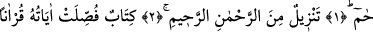
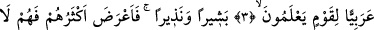
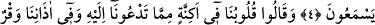
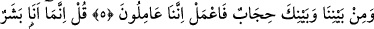
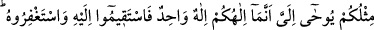
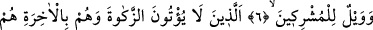
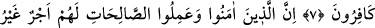
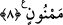
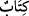

MÜJDELEYİCİ VE
UYARICI BİR KİTAB
Bismillâhirrahmânirrahîm
1. Hâ. Mîm.
2. (Kur’an) Rahmân ve Rahîm’in katından indirilmedir.
3. (Bu,) bilen bir kavim için, âyetleri Arapça okunarak açıklanmış bir kitaptır.
4. Bu kitap müjdeleyici ve uyarıcıdır. Fakat onların çoğu yüz çevirdi. Artık
dinlemezler.
5. Ve dediler ki: Bizi çağırdığın şeye karşı kalplerimiz kapalıdır. Kulaklarımızda
da bir ağırlık vardır. Bizimle senin aranda bir perde bulunmaktadır. Onun için sen
(istediğini) yap, biz de yapmaktayız!
6. De ki: Ben de ancak sizin gibi bir insanım. Bana ilâhınızın bir tek İlâh olduğu
vahy olunuyor. Artık O’na yönelin, O’ndan mağfiret dileyin. Ortak koşanların vay
hâline!
7. Onlar zekâtı vermezler; âhireti inkâr edenler de onlardır.
8. Şüphesiz îman edip yararlı iş işleyenler için başlarına asla kakılmayan bir
mükâfat vardır.
Rahman ve Rahim olan Allâh’ın adıyla
“Hâ, Mîm”, mahzûf bir mübtedânın haberi olup mahallen merfûdur. Takdîri ise şu
şekildedir: “Bu sûre Hâ Mîm olarak adlandırılmıştır.” Sûreden, (az sonra üçüncü âyette
gelecek) (
) “kitab” diye söz edilmesi, bu sûrenin de Kitab’ın/Kur’an’ın bir parçası